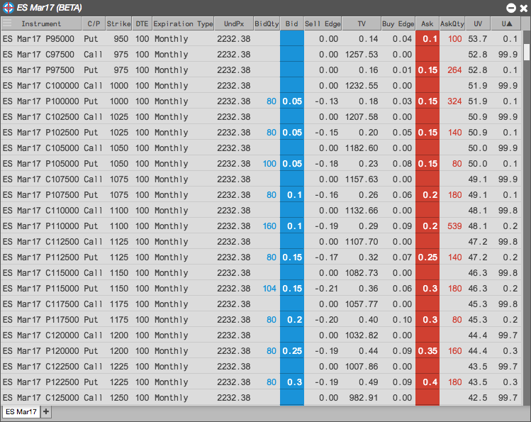
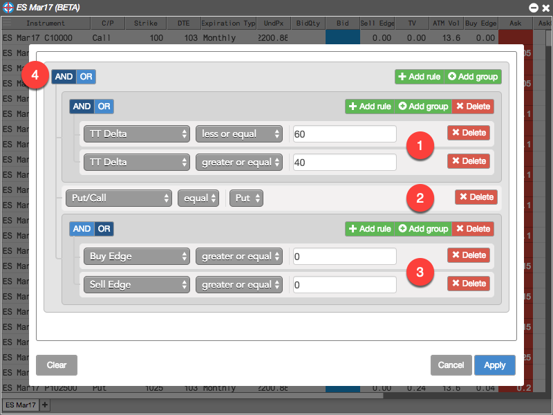
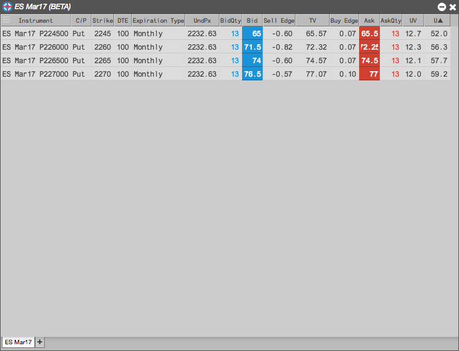
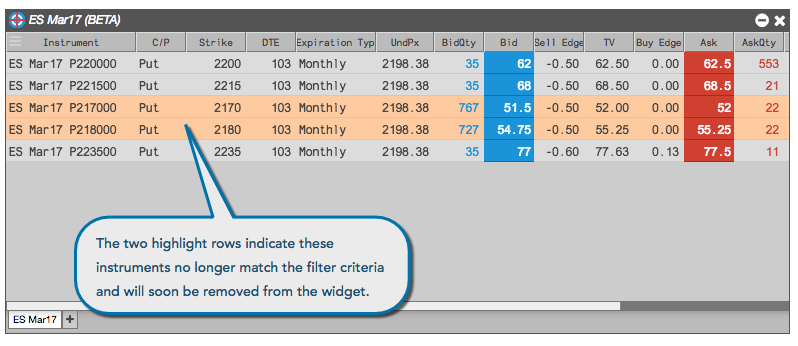

The Electronic Eye displays all options instruments associated with the selected product and term, many of which might not meet your trading interests. To help you find opportunities that match your trading needs, the Electronic Eye also supports the ability to create simple to complex filters that can reduce the number of options instruments shown in the widget. You can define widgets to find opportunities for trading options such as those that have a delta value within a desired range or those that currently have a buy or sell edge, giving you an opportunity to trade at an advantage.

The filter dialog provides a graphical way to create the filtering logic, as shown in the following example.

Using this filter reduces the list of options instruments to the two opportunities that meet these filter requirements. The filter continues to monitor the instruments and adds and removes them as they meet or no longer meet the filter requirements.

Another benefit of filters is that they allow you to see when matching opportunities are no longer available. Opportunities displayed in the Electronic Eye might be short lived. If an opportunity no longer meets your filter criteria, it is highlighted to alert you that it will soon be removed from the widget. This highlighting helps you anticipate the removal of rows in case you are trying to click on a row whose location in the display might change.
